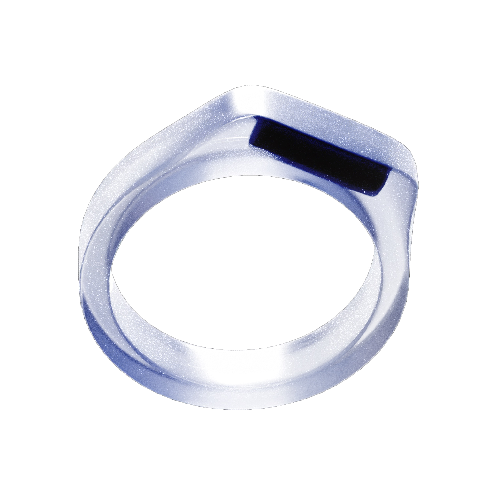

Behind the
Scenes.
Learn how keyrings are made.
expand_more
Meet the Team.
Jacqueline Sung
Project Manager
Henry Warren
Technology Expert
Henry Groome
Product Designer
Each keyring is made with epoxy resin molded to fit custom ring sizes. Radio Frequency Identification (RFID) technology is embedded during the manufacturing process. Data is then transferred to the RFID card, making each keyring functional and custom to each owner.